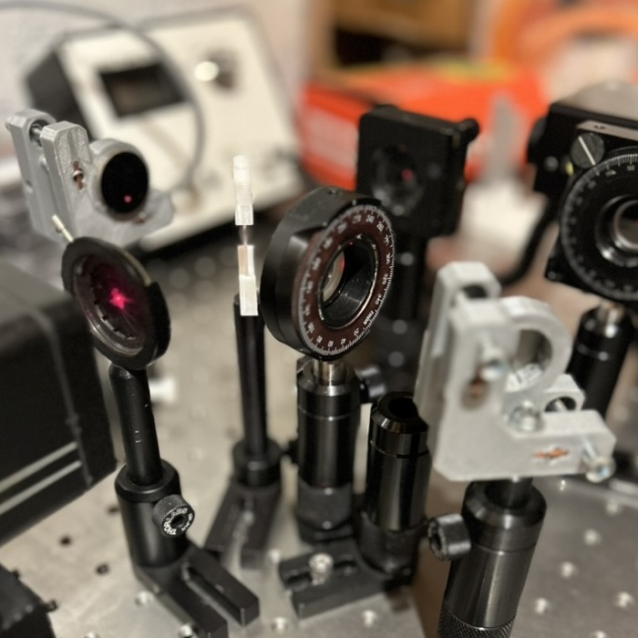
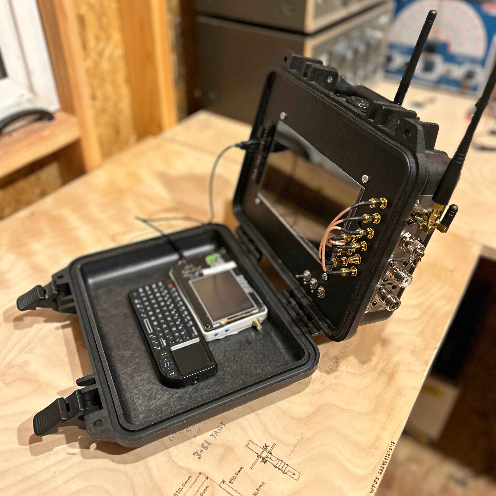
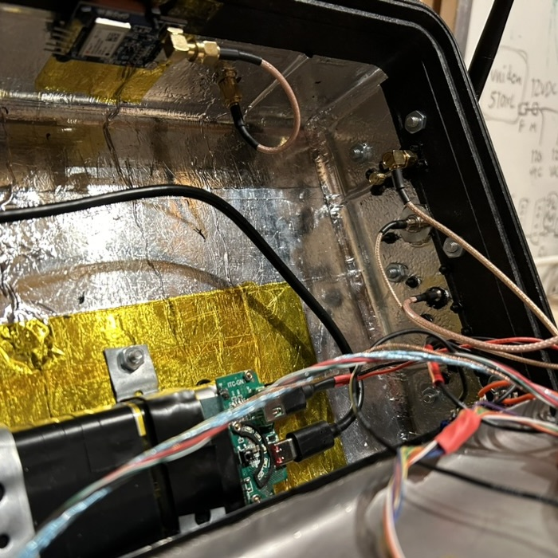
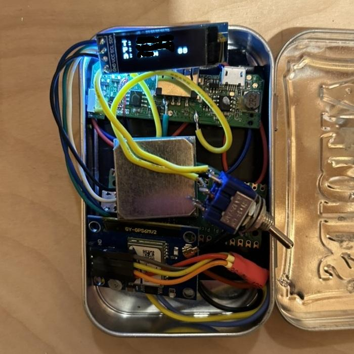

Projects and Independent Research
Beyond strictly physics, I have invested time working on various computer science and optics projects. This page serves as a summary of a few of my favorite creations.
3D Printed Optomechanics
Since my freshman year of high school, I have slowly been building my own optics lab. What started as a Michelson-Morley interferometer made of LEGOs has evolved into an amateur optics table with a mix of Thorlabs, Newport, and various custom 3D printed and CNC-machined parts. 
For several years, I reached out to numerous optics companies inquiring about any damaged or returned parts, as well as finding retired startup labs willing to sell equipment for a fraction of its cost. Eventually, I decided to learn how to make my own parts. Most of the experiments I've conducted relate to fluorescence and launching fiber cables, though simply practicing alignment or measuring interference patterns has provided ample justification for fabricating my own mounting systems.
RemBRanDT (Remote Base-Range Data Transformer)
Originally referred to as my "Not-a-bomb" project, this mobile radio computer takes inspiration from the cyberdeck community. 
Despite still being a work in progress, RemBRanDT currently has functional radio and GPS capabilities. 
Parametrics and Chord Theory
After experimenting with complex jazz chords while studying signal processing, various unexpected connections between the two became apparent. A couple of years ago, a friend introduced me to the world of Modular Synthesizers, which led me down the path of Modular Synth Rack software such as VCV Rack.
The learning curve is steep and by no means something I’d claim to have mastered, though it provides the perfect tools to study the harmonics of true chords. By "true chords," I am referring to the latter of two fundamental types of tuning: equal temperament and just intonation.
In almost all Western music, distances between notes are determined by a set division of one octave. Today, people mostly use 12-tone equal temperament. In this system, intervals such as a major third or a fifth are not perfectly aligned with their respective mathematical harmonic ratios. Just intonation, however, aims to establish intervals relative to a set tone in a given chord, rather than an equal division within an octave.
Given the sine and cosine nature of these signals produced by the synthesizer, it's natural to extend the idea to parametric equations for illustration purposes. To keep the equations cleaner, the explicit multiplication of frequencies is omitted, though each term corresponds to a harmonic ratio for a major 7th chord. The sum of each pitch can be expressed by the following parametric equations:
These equations generalize over \( N \) and \( M \) tones, where each frequency \( f_i \) has its own harmonic ratio \( r_i \) and corresponding amplitudes \( A_i \) and \( B_i \) for the right and left channels, respectively.
By generating pure tones with a digital synthesizer and plotting their \(\pi/2\) offset on an oscilloscope, one can see for themselves how delicate harmonics are. Two frequencies perfectly tuned produce a still set of parametric curves, whereas the slightest difference in frequencies causes harmonic oscillation.


GPS in an Altoids Tin
As a college student, budgeting for hobbies requires some purchases to wait. 
When it comes to navigation, altitude, latitude, and longitude, accompanied by a paper map, can almost completely compensate for the lack of a several-hundred-dollar GPS.
The trickiest part of this project was finding a way to accurately sample the GPS location while conserving battery. Initially, I used a very cheap 128x32 pixel screen, which limited me to three lines of text. Ultimately, thanks to the speedy fix times of the GPS module, the device can be turned off until exact coordinates and elevation are needed. With sporadic use, this allows the 300mAh battery to last for a few days without any issues.